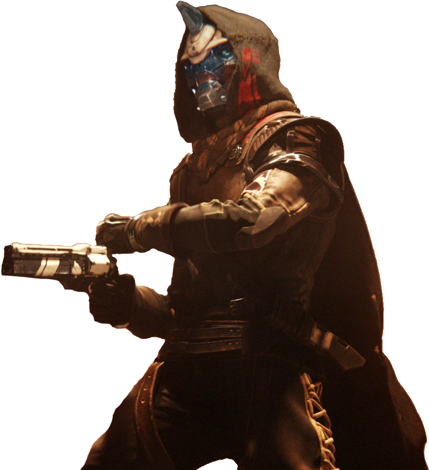
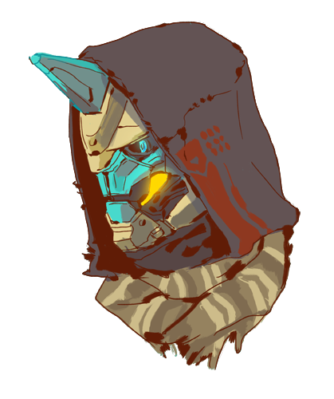
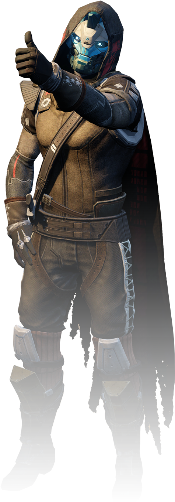

Cayde-6
Cayde-6 era o antigo caçador da vanguarda e dono do canhão de mão "Ace of Spades".
Através do livro da história, The Man They Called Cayde da expansão Forsaken, muitas verdades sobre o caráter de Cayde são revelados. Antes da Forsaken, havia muitos comentários e várias entradas de "lore" onde Cayde detalhava a personalidade de sua esposa e filho antes de ser um Guardião; entretanto, no último livro de "lore", ele admitiu que eram mentiras. Ele disse que não se lembrava de nada sobre eles, exceto que os amava ou os amava, em última análise atribuindo tudo ao fato de que era a memória deles, por mais falsa que fosse, que o fazia continuar, fazendo dele o herói amado, finalmente aconselhando o Guardião que pode ser sábio fazer o mesmo se os ajudar a se manterem fiéis ao seu caminho.
Timeline
- Destiny 1 - 2014
- Destiny 2 - 2017
- Destiny 2: Forsaken - 2018
Galeria
  